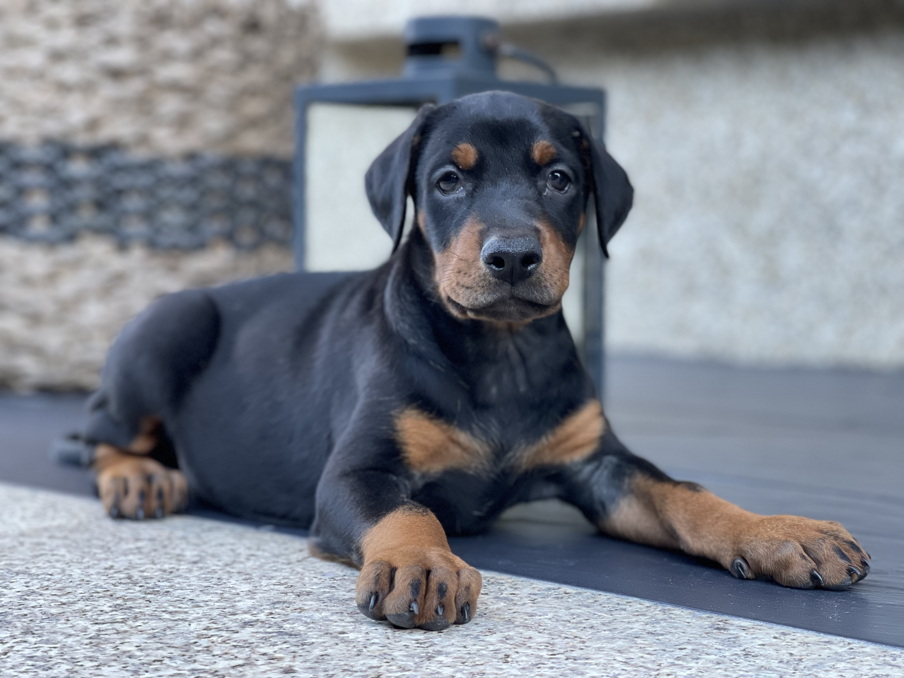
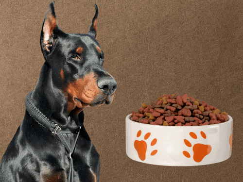

El Dóberman: Lealtad, Energía y Elegancia
El Dóberman es una de las razas más admiradas por su inteligencia, agilidad y capacidad de protección. En este artículo exploramos su origen, temperamento y los cuidados esenciales para garantizar su bienestar físico y emocional.
Leer másEntrenamiento del dóberman desde cachorro
Iniciar el entrenamiento desde temprana edad es clave en esta raza. Te explicamos técnicas positivas y cómo socializarlo correctamente para desarrollar un temperamento equilibrado.
Leer másNutrición ideal para un dóberman activo
El dóberman necesita una dieta rica en proteínas y nutrientes. En este artículo te damos consejos veterinarios para alimentar correctamente a un perro enérgico y musculoso.
Leer más